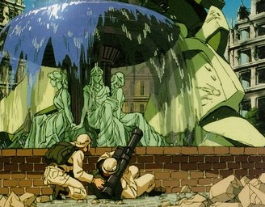

| Marines |
|
|  | |
General and Technical Data |
|
|
Unit type: all purpose infantry Unit size: 12 men Armament: Beretta 92, Grenades, FN SCAR, FN MINIMI, M136 |
|
| Technical and Historical Notes | |
| Still universally accepted as the face and backbone of warfare, infantry units control the actual grounds of a fortress, and are used to storm enemy positions. While sightings of infantry taking out a mobile suit with simple RPGs and bazookas do exist, they are much more effective against enemy infantry, and work best in tandem with other forces. |
 RPG quick stats sheet
RPG quick stats sheet